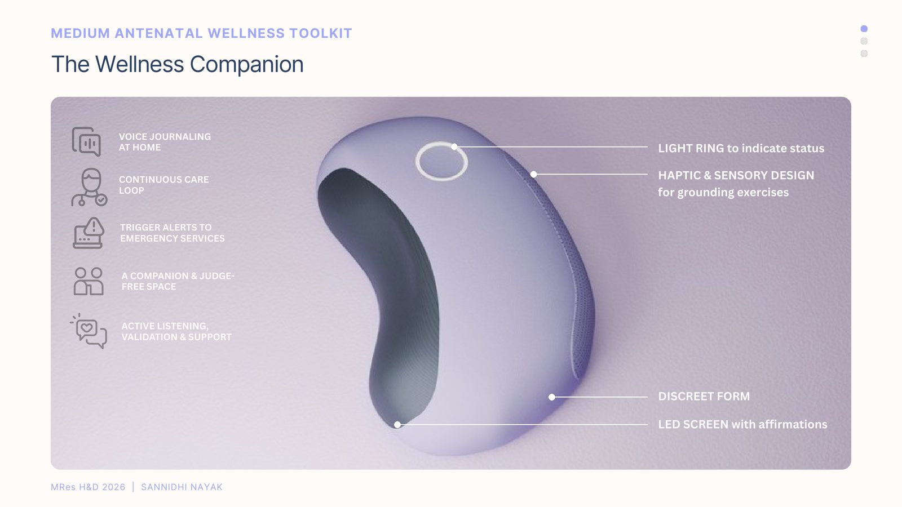
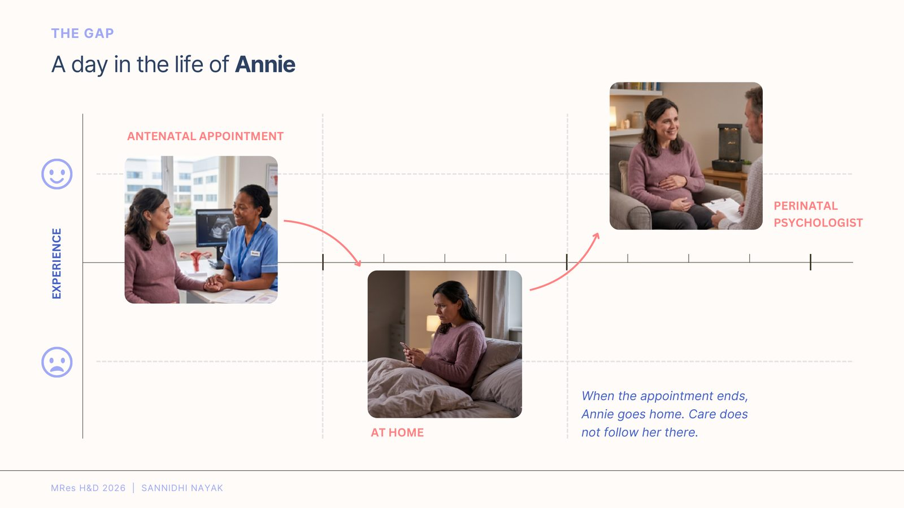
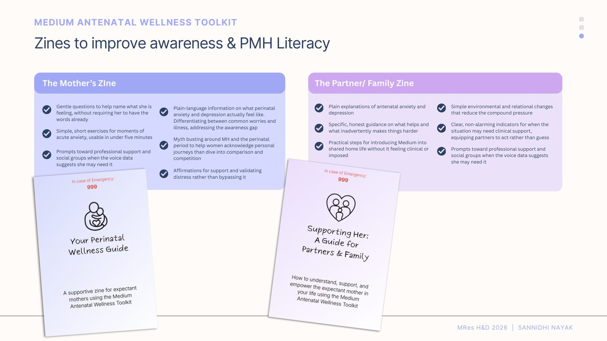
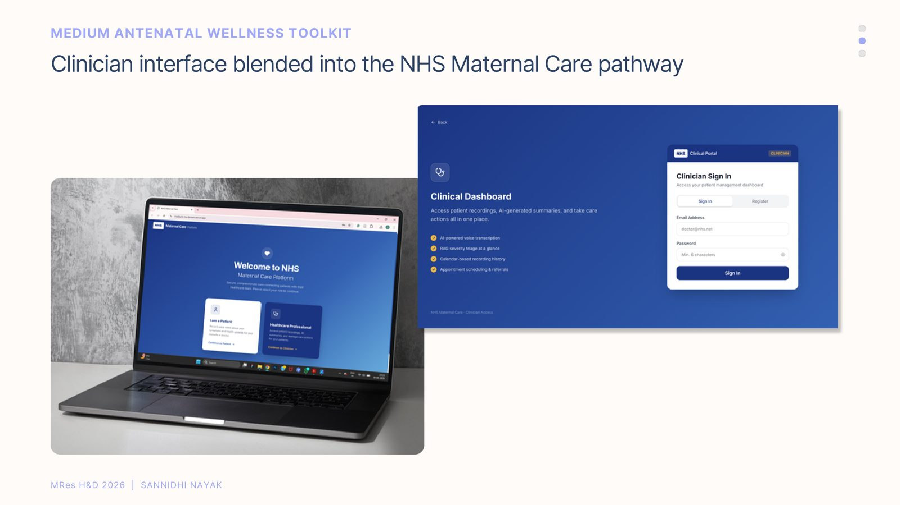
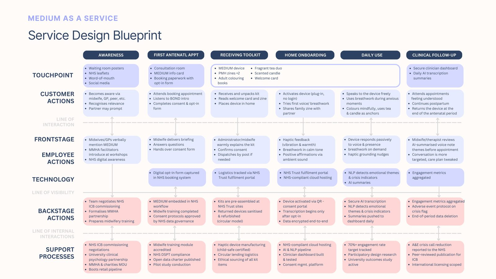

01 / medium
Healthcare Design · Service Design · MRes Thesis, 2026
A wellness companion device, literacy zines, and an NHS-integrated clinician workflow — designed to close the care gap between antenatal appointments and daily life at home.

The Gap
Antenatal care is built around clinical appointments — but the hours in between are where anxiety, isolation, and doubt actually happen.
When the appointment ends, Annie goes home. Care does not follow her there.

The Insights
Significance & Research Question
How might we help antenatal women manage difficult emotions at home via a physical, non-pharmacological intervention?
The Solution
A discreet, ambient device that responds passively to voice and presence — offering grounding, not surveillance.

Two companion zines extend the toolkit beyond the device itself: The Mother’s Zine offers gentle prompts, grounding exercises, and plain-language information on perinatal anxiety and depression. The Partner/Family Zine gives partners honest, practical guidance on how to help without making things harder.
Clinician Interface & Service Design
Daily voice notes are AI-summarised into a secure clinician dashboard — surfacing emotional themes and risk indicators before each appointment, so care is more targeted without adding clinician workload.


The service blueprint maps the full loop — from waiting-room awareness, through kit onboarding and daily ambient use, to clinical follow-up — across four phases: introduction & awareness, onboarding & usage, crisis prevention & follow-up, and a circular return model for reduced e-waste and improved accessibility.
Feedback
“I most like the idea of having a toolkit whose primary purpose is awareness raising, given alongside existing antenatal care — that has the most likelihood of getting around mental health stigma and opening up conversations.”
“This is a great intervention, something I haven’t seen implemented as a service. It’s a nice thought to give partners some accountability through the zine — this makes sure mothers are supported one way or the other.”
“I am very passionate about the peer and community support element — highlighting that there is a club of people out there going through the same thing. Any kind of localised signposting? That is wonderful!”
Future Scope
Extending beyond UK NHS access to low-income communities and underserved populations globally, where the disparity in perinatal mental health services is greatest.
Exploring how the platform responds to miscarriage, pregnancy loss, and fertility treatment — and what other unmet needs in maternal health it could address.
A future version could adapt as the baby grows — introducing play and sensory bonding components that extend the product’s life beyond pregnancy.
Building a functional prototype with real microphone, haptic motor, and NLP components — testing child-safe materials and NHS-compatible manufacturing.
Next case study